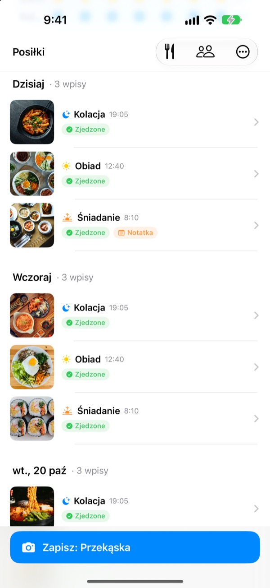
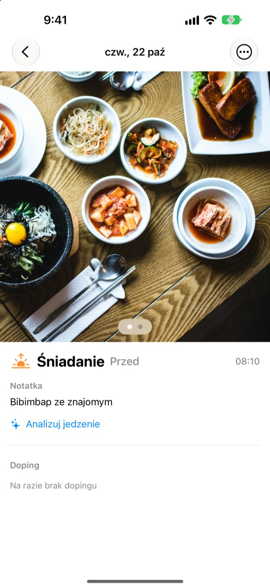
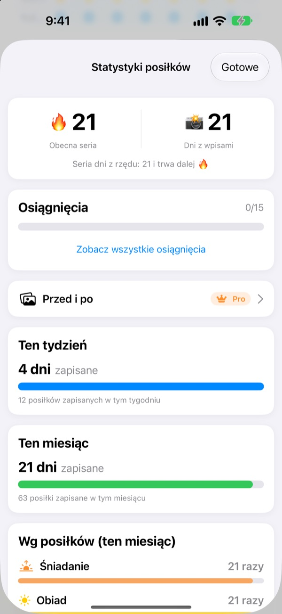
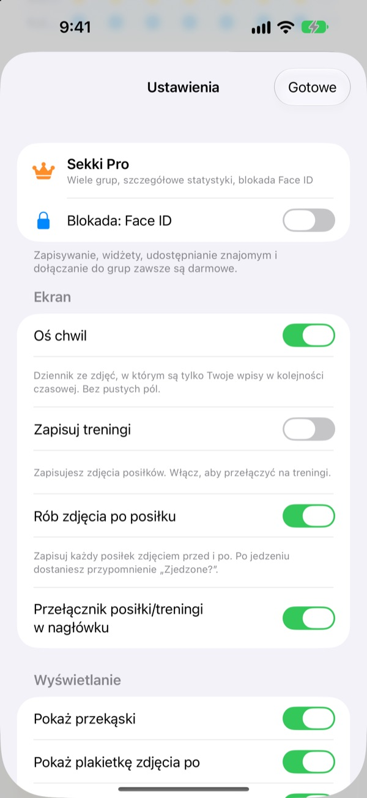

Jedno zdjęcie przed jedzeniem.
I zapisane.
Sekki sprawdza, kiedy zrobiono zdjęcie, i przypisuje je do śniadania, obiadu, kolacji albo przekąski. Zapisz choćby jeden posiłek dziennie, a seria trwa dalej.
Zapisywanie, statystyki, widżety i udostępnianie znajomym są za darmo.

Wypróbuj sam
Wybierz godzinę i stuknij przycisk zapisu. Tak jak w aplikacji, przycisk od razu pokazuje posiłek dla tej pory.
Rzuciłeś dziennik jedzenia po trzech dniach?
Pominiesz śniadanie, zapomnisz o kolacji i puste pola zaczynają drażnić, aż w końcu usuwasz aplikację. Sekki nie ma pustych pól. Po kolei zbierają się tylko zapisane posiłki, a jedno zdjęcie wystarczy, żeby dzień się liczył.
Zrób zdjęcie, a posiłek trafi na miejsce
Na podstawie godziny Sekki przypisuje zdjęcie do śniadania, obiadu, kolacji albo przekąski. Dodaj zdjęcia przed i po, zapisz bez zdjęcia lub dopisz notatkę.
Jedzenie jest rozpoznawane za darmo na urządzeniu, a zdjęcia nigdy nie opuszczają telefonu.

Dziennik, który nigdy nie maleje
Jeden posiłek dziennie utrzymuje serię, a łączna liczba zapisanych dni nigdy nie spada. Statystyki tygodniowe i miesięczne pokazują, ile dni i posiłków zapisałeś, a nie procent wykonania.
Po drodze zbierasz osiągnięcia, takie jak 7 dni z rzędu czy Ranny ptaszek.

Tylko wybrane posiłki, bez otwierania aplikacji
Wybierz, o których posiłkach chcesz przypomnień, i dopasuj godziny do swojego dnia. Po zdjęciu przed jedzeniem oznaczysz Zjedzone prosto z powiadomienia.
Zapisuj też przyciskiem czynności, przez Siri, Skróty lub widżet, a znajomych dodawaj kodem i kibicujcie sobie emoji i komentarzami.

Zacznij w trzech krokach
- 1
Wybierz posiłki
Przy pierwszym uruchomieniu Sekki zapyta, o których posiłkach przypominać. Zmienisz to w Ustawieniach.
- 2
Zdjęcie przed jedzeniem
Przycisk zapisu pokazuje już posiłek dla bieżącej godziny. Stuknij, zrób zdjęcie, gotowe.
- 3
Zjedzone? Jedno stuknięcie
Stuknij Zjedzone w powiadomieniu lub widżecie albo dodaj zdjęcie po jedzeniu.
Zapisywanie bez otwierania aplikacji
- Powiadomienie
- Po zdjęciu przed jedzeniem oznacz Zjedzone prosto z powiadomienia
- Widżet ekranu początkowego
- Zobacz dzisiejszą liczbę zapisów i trwający posiłek, potem stuknij Zjedzone
- Widżety ekranu blokady
- Prostokątny, okrągły i w jednej linii
- Przycisk czynności · Siri · Skróty
- Zjedzone jednym naciśnięciem lub jednym zdaniem
- Zapis w Zdjęciach
- Włącz w Ustawieniach, aby posiłki i treningi trafiały do osobnych albumów Sekki
- Tryb treningu
- Treningi są oddzielone od posiłków, a liczbę treningów w miesiącu widać od razu
Przycisk Zjedzone w widżecie wymaga iOS 17 lub nowszego.
Zapisywanie jest za darmo. Sekki Pro idzie głębiej.
Za darmo
- Zapisy ze zdjęciem i automatycznym przypisaniem, zdjęcia przed i po, notatki
- Serie, łączna liczba dni, statystyki tygodniowe i miesięczne, osiągnięcia
- Przypomnienia o wybranych posiłkach i Zjedzone bez otwierania aplikacji
- Widżety, przycisk czynności, Siri i Skróty
- Udostępnianie posiłków i treningów znajomym, emoji i komentarze
- Utworzenie jednej grupy, dołączanie do dowolnej liczby innych
- Rozpoznawanie jedzenia na urządzeniu
Sekki Pro
- Wiele grup: rodzina, praca, ekipa z siłowni
- Porównanie posiłków sprzed kilku tygodni i dzisiejszych obok siebie
- Potrawy, które jesz najczęściej
- Blokada aplikacji przez Face ID lub Touch ID
Subskrypcja roczna lub miesięczna albo jednorazowy zakup dożywotni
Subskrypcja odnawia się automatycznie, jeśli nie anulujesz jej co najmniej 24 godziny przed końcem okresu. Anulujesz w dowolnej chwili w Ustawieniach > Konto Apple > Subskrypcje. Warunki usługi: m1zz.github.io/RoutineCamera/pl/terms.html
Częste pytania
Gdzie są zapisywane moje zdjęcia?
Na Twoim urządzeniu. Jeśli w Ustawieniach włączysz Zapisuj automatycznie w Zdjęciach, trafią też do albumów Sekki w Zdjęciach. Dopóki włączone jest Udostępniaj moje posiłki (na początku jest włączone), są wysyłane do iCloud, żeby dodani znajomi mogli je oglądać. Wyłączysz to w Ustawieniach > Konto i udostępnianie.
Jak dodać znajomych?
Na ekranie Znajomi udostępnij swój sześcioznakowy kod i wpisz kod znajomego. Możesz wkleić kilka kodów naraz, oddzielając je przecinkami.
Jak kibicować znajomemu?
Otwórz posiłek znajomego i zostaw emoji albo krótki komentarz. Jeśli jeszcze nic nie zapisał, stuknij puste pole, żeby go delikatnie szturchnąć.
Czy seria przepada, gdy pominę posiłek?
Nie. Zapisz tego dnia dowolny posiłek, także przekąskę, a seria trwa dalej. Nawet jeśli pominiesz cały dzień, łączna liczba zapisanych dni nie spada.
Nie dostaję powiadomień.
Sprawdź w Ustawieniach iOS > Powiadomienia, czy Sekki ma pozwolenie na powiadomienia, oraz czy urządzenie jest zalogowane do iCloud. Godziny przypomnień zmienisz w ustawieniach aplikacji.
Czy rozpoznawanie jedzenia wysyła zdjęcia na serwer?
Nie. Działa na urządzeniu, więc zdjęcia nigdy nie opuszczają telefonu. Za darmo i bez limitu.
Jak usunąć konto i dane?
Wejdź w Znajomi > Konto > Usuń konto. Konto i dane posiłków na serwerze zostaną usunięte bez możliwości odzyskania. Jeśli coś pójdzie nie tak, napisz do nas.
Jak anulować subskrypcję?
W Ustawieniach > Konto Apple > Subskrypcje. Odnawia się automatycznie, jeśli nie anulujesz jej co najmniej 24 godziny przed końcem okresu. Zakup dożywotni opłacasz raz.
Błędy, pomysły lub pytania o konto: napisz na leeo@kakao.com albo wyślij DM do @lee25_ios na Instagramie. Zwykle odpowiadamy w ciągu dnia lub dwóch.